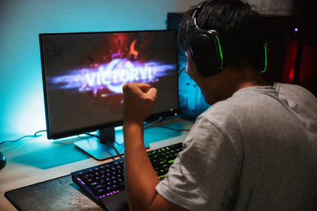
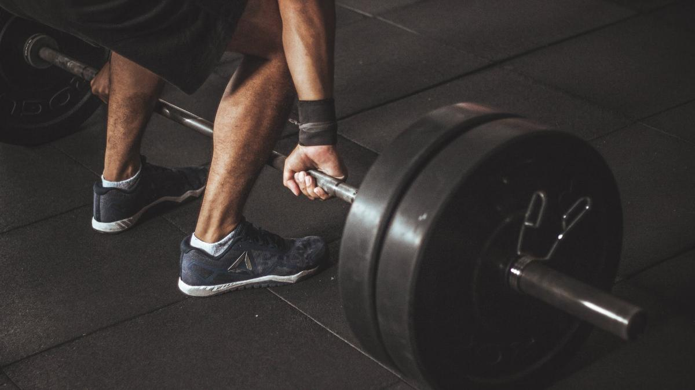

 <!DOCTYPE html>
<html lang="en">
<head>
    <meta charset="UTF-8">
    <meta name="viewport" content="width=device-width, initial-scale=1.0">
    <title>ABARCA</title> 
    <link rel="stylesheet" href="style.css">
</head>
<body>
    
</body>
</html>


<body bgcolor="silver">
    <h1>My hobbies</h1>
     <hr>
  <h1><li> Running </li></h1>
  <br> <h3><p>I’ve always found something deeply calming about running.
   It’s not about speed or distance—it’s about the rhythm of my steps and the way my body finds its flow.
    When I run, the noise in my head fades away, and everything else falls into the background. 
    There’s a kind of quiet peace that takes over, like I’m tuning out the world and giving myself permission to be in the moment.
     My breath matches my stride, and with each step, I feel more grounded. It’s almost like meditation in motion, a chance to clear my mind and reset, without any distractions or pressures.
      The sense of solitude, of being outside and moving freely, brings a sense of balance I don’t often find elsewhere.</p></h3>
  <h1><li>Playing online games</li>
    <h3><p>Ever since I was a kid, I’ve been hooked on online games because they felt like a secret escape from the chaos of the real world.
     I remember the first time I stumbled upon a multiplayer game; it was late at night, and I was home alone, my only company the flicker of my computer screen.
      As soon as I jumped into the game, I was instantly part of something bigger—a team, a community, a world where everyone had a role to play.
       The adrenaline rush of competition, the thrill of strategizing with friends I had never met in person, and the way time seemed to stop when I was in the zone made it addictive. 
       What started as a way to pass the time quickly became a deep-rooted passion, where every win felt like a personal achievement and every loss taught me something new. It wasn’t just about the games—it was about the connections, the challenge, and the endless adventure that awaited me with every login.</h3></p>
<h1><li>Working out</li></h1>
 <h3><p>Ever since I started working out, it’s felt like a way to push past my limits and reconnect with myself. I remember the first time I stepped into the gym—it was a mix of nerves and excitement. The weights clinked, the treadmill hummed, and for the first time, I wasn’t thinking about anything else but the next rep or the next mile. It wasn’t just about getting stronger physically; it was about proving to myself that I could push through challenges, even when I felt exhausted or discouraged. The rush of endorphins after a tough workout made everything feel clearer, as if the weight of the world lifted off my shoulders with every drop of sweat. What started as a way to get in shape soon became a passion, a routine I couldn’t live without. It wasn’t just about the gains—it was about the discipline, the mental clarity, and the sense of accomplishment that came with every session.</p></h3>
<h1>WANNA KNOW MY GOAL IN LIFE?!?! 
    OR NAHHH?
</h1>
</body>

</head>
 <body>
     <h2> <a href="index.html">Home</a><br>
    <a href="about.html">My Goals</a></h2><br>
    
    
 </body>
</html> 
